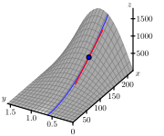

How are the first-order partial derivatives of a function \(f\) of the independent variables \(x\) and \(y\) defined?
Given a function \(f\) of the independent variables \(x\) and \(y\text{,}\) what do the first-order partial derivatives \(\frac{\partial
f}{\partial x}\) and \(\frac{\partial f}{\partial y}\) tell us about \(f\text{?}\)
The derivative plays a central role in first semester calculus because it provides important information about a function. Thinking graphically, for instance, the derivative at a point tells us the slope of the tangent line to the graph at that point. In addition, the derivative at a point also provides the instantaneous rate of change of the function with respect to changes in the independent variable.
Now that we are investigating functions of two or more variables, we can still ask how fast the function is changing, though we have to be careful about what we mean. Thinking graphically again, we can try to measure how steep the graph of the function is in a particular direction. Alternatively, we may want to know how fast a functions output changes in response to a change in one of the inputs. Over the next few sections, we will develop tools for addressing issues such as these. Preview Activity11.3.1 explores some issues with what we will come to call partial derivatives.
Preview Activity11.3.1.
Suppose we take out an $18,000 car loan at interest rate \(r\) and we agree to pay off the loan in \(t\) years. The monthly payment, in dollars, is
What is the monthly payment if the interest rate is \(3\%\) so that \(r =
0.03\text{,}\) and we pay the loan off in \(t=4\) years?
Suppose the interest rate is fixed at \(3\%\text{.}\) Express \(M\) as a function \(f\) of \(t\) alone using \(r=0.03\text{.}\) That is, let \(f(t) = M(0.03, t)\text{.}\) Sketch the graph of \(f\) on the left of Figure11.3.1. Explain the meaning of the function \(f\text{.}\)
Find the instantaneous rate of change \(f'(4)\) and state the units on this quantity. What information does \(f'(4)\) tell us about our car loan? What information does \(f'(4)\) tell us about the graph you sketched in (b)?
Express \(M\) as a function of \(r\) alone, using a fixed time of \(t=4\text{.}\) That is, let \(g(r) = M(r, 4)\text{.}\) Sketch the graph of \(g\) on the right of Figure11.3.1. Explain the meaning of the function \(g\text{.}\)
Find the instantaneous rate of change \(g'(0.03)\) and state the units on this quantity. What information does \(g'(0.03)\) tell us about our car loan? What information does \(g'(0.03)\) tell us about the graph you sketched in (d)?
Solution.
If the interest rate is \(r=3\% = 0.03\text{,}\) and we pay the loan off in \(t=4\) years, then the monthly payment is
which tells us that if we keep the interest rate constant at \(3\%\text{,}\) for every one year increase in the duration of the loan from 4 years there is an approximate decrease in the monthly payment of approximately 93.75 dollars. The quantity \(f'(4)\) also tells us the slope of the line tangent to the graph of \(f\) at \(t=4\text{.}\)
If \(t\) is fixed at \(t=4\text{,}\) then \(M\) is a function of \(r\) alone and
which tells us that if we keep the duration of the loan constant at 4 years, if we increase the interest rate by 1 from a rate of 3%, the monthly payment on the loan increases by approximately $795.54. The quantity \(g'(0.03)\) also tells us the slope of the line tangent to the graph of \(g\) at \(r=0.03\text{.}\)
Subsection11.3.1First-Order Partial Derivatives
In [cross-reference to target(s) "S-9-1-Functions" missing or not unique], we studied the behavior of a function of two or more variables by considering the traces of the function. Recall that in one example, we considered the function \(f\) defined by
which measures the range, or horizontal distance, in feet, traveled by a projectile launched with an initial speed of \(x\) feet per second at an angle \(y\) radians to the horizontal. The graph of this function is given again on the left in Figure11.3.2. Moreover, if we fix the angle \(y = 0.6\text{,}\) we may view the trace \(f(x,0.6)\) as a function of \(x\) alone, as seen at right in Figure11.3.2.
Figure11.3.2.Left: The trace of \(z=\frac{x^2 \sin(2 y)}{32}\) with \(y = 0.6\text{.}\)
Since the trace is a one-variable function, we may consider its derivative just as we did in the first semester of calculus. With \(y=0.6\text{,}\) we have
\begin{equation*}
\frac{d}{dx}[f(x,0.6)]|_{x=150} = \frac{\sin(1.2)}{16}150 \approx
8.74~\mbox{feet per feet per second} ,
\end{equation*}
which gives the slope of the tangent line shown on the right of Figure11.3.2. Thinking of this derivative as an instantaneous rate of change implies that if we increase the initial speed of the projectile by one foot per second, we expect the horizontal distance traveled to increase by approximately 8.74 feet if we hold the launch angle constant at \(0.6\) radians.
By holding \(y\) fixed and differentiating with respect to \(x\text{,}\) we obtain the first-order partial derivative of \(f\) with respect to \(x\). Denoting this partial derivative as \(f_x\text{,}\) we have seen that
Once again, the derivative gives the slope of the tangent line shown on the right in Figure11.3.3. Thinking of the derivative as an instantaneous rate of change, we expect that the range of the projectile increases by 509.5 feet for every radian we increase the launch angle \(y\) if we keep the initial speed of the projectile constant at 150 feet per second.
By holding \(x\) fixed and differentiating with respect to \(y\text{,}\) we obtain the first-order partial derivative of \(f\) with respect to \(y\). As before, we denote this partial derivative as \(f_y\) and write
As with the partial derivative with respect to \(x\text{,}\) we may express this quantity more generally at an arbitrary point \((a,b)\text{.}\) To recap, we have now arrived at the formal definition of the first-order partial derivatives of a function of two variables.
Definition11.3.4.
The first-order partial derivatives of \(f\) with respect to \(x\) and \(y\) at a point \((a,b)\) are, respectively,
Write the trace \(f(x,2)\) at the fixed value \(y=2\text{.}\) On the left side of Figure11.3.5, draw the graph of the trace with \(y=2\) around the point where \(x=1\text{,}\) indicating the scale and labels on the axes. Also, sketch the tangent line at the point \(x=1\text{.}\)
Figure11.3.5.Traces of \(f(x,y) = \frac{xy^2}{x+1}\text{.}\)
Find the partial derivative \(f_x(1,2)\) and relate its value to the sketch you just made.
Write the trace \(f(1,y)\) at the fixed value \(x=1\text{.}\) On the right side of Figure11.3.5, draw the graph of the trace with \(x=1\) indicating the scale and labels on the axes. Also, sketch the tangent line at the point \(y=2\text{.}\)
Find the partial derivative \(f_y(1,2)\) and relate its value to the sketch you just made.
Solution.
Here we have \(f(x,2) = \frac{4x}{x+1}\text{.}\) At the point where \(x=1\text{,}\) the tangent line to this trace has slope \(\frac{d}{dx} f(x,2) \left. \right|_{x=1} = 1\text{,}\) and so the line tangent to the graph of this trace at \(x=1\) has equation \(z=2+(x-1)\text{.}\)
Now \(f_x(x,y) = \frac{(x+1)(y^2) - xy^2}{(x+1)^2}\text{,}\) and so \(f_x(1,2) = \frac{8-4}{4} = 1\text{.}\) This is the slope of the line tangent to the trace \(f(x,2)\) at the point where \(x=1\text{,}\) as calculated in part (a).
Here we have \(f(1,y) = \frac{1}{2}y^2\text{.}\) At the point where \(y=2\text{,}\) the tangent line to this trace has slope \(\frac{d}{dy} f(1,y) \left. \right|_{y=2} = 2\text{,}\) and so the line tangent to the graph of this trace at \(y=2\) has equation \(z=2+2(y-2)\text{.}\)
Now \(f_y(x,y) = \frac{x}{x+1}(2y)\text{,}\) and so \(f_y(1,2) = 2\text{.}\) This is the slope of the line tangent to the trace \(f(1,y)\) at the point where \(y=2\text{,}\) as calculated in part (c).
As these examples show, each partial derivative at a point arises as the derivative of a one-variable function defined by fixing one of the coordinates. In addition, we may consider each partial derivative as defining a new function of the point \((x,y)\text{,}\) just as the derivative \(f'(x)\) defines a new function of \(x\) in single-variable calculus. Due to the connection between one-variable derivatives and partial derivatives, we will often use Leibniz-style notation to denote partial derivatives by writing
\begin{equation*}
\frac{\partial f}{\partial x}(a, b) = f_x(a,b),
\
\mbox{and}
\
\frac{\partial f}{\partial y}(a, b) = f_y(a,b).
\end{equation*}
To calculate the partial derivative \(f_x\text{,}\) we hold \(y\) fixed and thus we treat \(y\) as a constant. In Leibniz notation, observe that
To see the contrast between how we calculate single variable derivatives and partial derivatives, and the difference between the notations \(\frac{d}{dx}[ \ ]\) and \(\frac{\partial}{\partial x}[ \ ]\text{,}\) observe that
Thus, computing partial derivatives is straightforward: we use the standard rules of single variable calculus, but do so while holding one (or more) of the variables constant.
Activity11.3.3.
If \(f(x,y) = 3x^3 - 2x^2y^5\text{,}\) find the partial derivatives \(f_x\) and \(f_y\text{.}\)
If \(f(x,y) = \displaystyle\frac{xy^2}{x+1}\text{,}\) find the partial derivatives \(f_x\) and \(f_y\text{.}\)
If \(g(r,s) = rs\cos(r)\text{,}\) find the partial derivatives \(g_r\) and \(g_s\text{.}\)
Assuming \(f(w,x,y) = (6w+1)\cos(3x^2+4xy^3+y)\text{,}\) find the partial derivatives \(f_w\text{,}\)\(f_x\text{,}\) and \(f_y\text{.}\)
Find all possible first-order partial derivatives of \(q(x,t,z) =
\displaystyle \frac{x2^tz^3}{1+x^2}.\)
Solution.
When we differentiate with respect to \(x\text{,}\) we treat \(y\) as a constant. So the power and scalar multiple rules give us
Subsection11.3.2Interpretations of First-Order Partial Derivatives
Recall that the derivative of a single variable function has a geometric interpretation as the slope of the line tangent to the graph at a given point. Similarly, we have seen that the partial derivatives measure the slope of a line tangent to a trace of a function of two variables as shown in Figure11.3.6.

Figure11.3.6.Tangent lines to two traces of the distance function.
Now we consider the first-order partial derivatives in context. Recall that the difference quotient \(\frac{f(a+h)-f(a)}{h}\) for a function \(f\) of a single variable \(x\) at a point where \(x=a\) tells us the average rate of change of \(f\) over the interval \([a,a+h]\text{,}\) while the derivative \(f'(a)\) tells us the instantaneous rate of change of \(f\) at \(x=a\text{.}\) We can use these same concepts to explain the meanings of the partial derivatives in context.
Activity11.3.4.
The speed of sound \(C\) traveling through ocean water is a function of temperature, salinity and depth. It may be modeled by the function
Here \(C\) is the speed of sound in meters/second, \(T\) is the temperature in degrees Celsius, \(S\) is the salinity in grams/liter of water, and \(D\) is the depth below the ocean surface in meters.
State the units in which each of the partial derivatives, \(C_T\text{,}\)\(C_S\) and \(C_D\text{,}\) are expressed and explain the physical meaning of each.
Find the partial derivatives \(C_T\text{,}\)\(C_S\) and \(C_D\text{.}\)
Evaluate each of the three partial derivatives at the point where \(T=10\text{,}\)\(S=35\) and \(D=100\text{.}\) What does the sign of each partial derivatives tell us about the behavior of the function \(C\) at the point \((10,35, 100)\text{?}\)
Solution.
The partial derivative \(C_T\) is defined in terms of a change in \(C\) per change in \(T\text{.}\) So the units of \(C_T\) are units of \(C\) over units of \(T\text{,}\) or \(\frac{\frac{\text{m} }{\text{ sec } }}{^{\circ}C}\text{.}\) This partial \(C_T\) approximates how the speed of sound changes for every degree Celsius increase in the temperature of the water. Similarly, the units of \(C_S\) are \(\frac{\frac{\text{m} }{\text{ sec } }}{\frac{g}{L}}\text{.}\) This partial \(C_S\) approximates how the speed of sound changes for every gram per liter increase of the salinity of the water. Finally, the units of \(C_D\) are \(\frac{\frac{\text{m} }{\text{ sec } }}{\text{m}}\text{.}\) This partial \(C_D\) approximates how the speed of sound changes for every meter increase in depth below the ocean surface.
That \(C_T(10,35,100)\) is positive tells us that if we increase the temperature from \(10^{\circ}C\) while holding the salinity constant at 35 grams per liter and the depth constant at 100 meters, the speed of sound in the ocean increases. Similarly, the fact that \(C_S(10,35,100)\) is positive tells us that if we increase salinity from 35 grams per liter while holding the the temperature constant at \(10^{\circ}C\) and the depth constant at 100 meters, the speed of sound in the ocean increases. Also, the fact that \(C_D(10,35,100)\) is positive tells us that if we increase depth from 100 meters while holding the the temperature constant at \(10^{\circ}C\) and the salinity constant at 35 grams per liter, the speed of sound in the ocean increases.
Subsection11.3.3Using tables and contours to estimate partial derivatives
Remember that functions of two variables are often represented as either a table of data or a contour plot. In single variable calculus, we saw how we can use the difference quotient to approximate derivatives if, instead of an algebraic formula, we only know the value of the function at a few points. The same idea applies to partial derivatives.
Activity11.3.5.
The wind chill, as frequently reported, is a measure of how cold it feels outside when the wind is blowing. In Table11.3.7, the wind chill \(w\text{,}\) measured in degrees Fahrenheit, is a function of the wind speed \(v\text{,}\) measured in miles per hour, and the ambient air temperature \(T\text{,}\) also measured in degrees Fahrenheit. We thus view \(w\) as being of the form \(w = w(v, T)\text{.}\)
Table11.3.7.Wind chill as a function of wind speed and temperature.
\(v \backslash T\)
\(-30\)
\(-25\)
\(-20\)
\(-15\)
\(-10\)
\(-5\)
\(0\)
\(5\)
\(10\)
\(15\)
\(20\)
\(5\)
\(-46\)
\(-40\)
\(-34\)
\(-28\)
\(-22\)
\(-16\)
\(-11\)
\(-5\)
\(1\)
\(7\)
\(13\)
\(10\)
\(-53\)
\(-47\)
\(-41\)
\(-35\)
\(-28\)
\(-22\)
\(-16\)
\(-10\)
\(-4\)
\(3\)
\(9\)
\(15\)
\(-58\)
\(-51\)
\(-45\)
\(-39\)
\(-32\)
\(-26\)
\(-19\)
\(-13\)
\(-7\)
\(0\)
\(6\)
\(20\)
\(-61\)
\(-55\)
\(-48\)
\(-42\)
\(-35\)
\(-29\)
\(-22\)
\(-15\)
\(-9\)
\(-2\)
\(4\)
\(25\)
\(-64\)
\(-58\)
\(-51\)
\(-44\)
\(-37\)
\(-31\)
\(-24\)
\(-17\)
\(-11\)
\(-4\)
\(3\)
\(30\)
\(-67\)
\(-60\)
\(-53\)
\(-46\)
\(-39\)
\(-33\)
\(-26\)
\(-19\)
\(-12\)
\(-5\)
\(1\)
\(35\)
\(-69\)
\(-62\)
\(-55\)
\(-48\)
\(-41\)
\(-34\)
\(-27\)
\(-21\)
\(-14\)
\(-7\)
\(0\)
\(40\)
\(-71\)
\(-64\)
\(-57\)
\(-50\)
\(-43\)
\(-36\)
\(-29\)
\(-22\)
\(-15\)
\(-8\)
\(-1\)
Estimate the partial derivative \(w_v(20,-10)\text{.}\) What are the units on this quantity and what does it mean? (Recall that we can estimate a partial derivative of a single variable function \(f\) using the symmetric difference quotient \(\frac{f(x+h)-f(x-h)}{2h}\) for small values of \(h\text{.}\) A partial derivative is a derivative of an appropriate trace.)
Estimate the partial derivative \(w_T(20,-10)\text{.}\) What are the units on this quantity and what does it mean?
Use your results to estimate the wind chill \(w(18, -10)\text{.}\) (Recall from single variable calculus that for a function \(f\) of \(x\text{,}\)\(f(x+h) \approx f(x) + hf'(x)\text{.}\))
Use your results to estimate the wind chill \(w(20, -12)\text{.}\)
Consider how you might combine your previous results to estimate the wind chill \(w(18, -12)\text{.}\) Explain your process.
which gives us the slope of the tangent line to the trace in the \(v\) direction. We can approximate this slope with the slope of a secant line, choosing points equally spaced on both sides of \((v,T)\text{.}\) In other words,
for small values of \(h\text{.}\) This is the symmetric difference quotient from calculus 1. The data in our table allows us to use \(h=5\) for wind speed, so
degrees Fahrenheit per mile per hour. So for every one mile per hour increase in the wind speed from 20 miles per hour, while holding the air temperature constant at \(-10^{\circ}F\text{,}\) the wind chill decreases by approximately 0.5 \(^{\circ}F\text{.}\)
We approximate \(w_T(20,-10)\) in the same way, using \(h=5\) again. So
degrees Fahrenheit per degree Fahrenheit. So for every one degree Fahrenheit increase in the wind temperature \(-10^{\circ}F\text{,}\) while holding the wind speed constant at 20 miles per hour, the wind chill increases by approximately 1.3 \(^{\circ}F\text{.}\)
This is just like a linearization from calculus 1 along the trace with \(T=-10\text{.}\) We found the slope of the tangent line to the \(T=-10\) trace of \(w\) at the point \((20,-10)\) to be \(-0.5\text{,}\) so
This is just like a linearization from calculus 1 along the trace with \(v=20\text{.}\) We found the slope of the tangent line to the \(v=20\) trace of \(w\) at the point \((20,-10)\) to be \(1.3\text{,}\) so
We might expect that the total change in \(w\) will be calculated by using the changes in \(w\) that arise from changing both the \(v\) and \(T\) coordinates. In other words,
Shown below in Figure11.3.8 is a contour plot of a function \(f\text{.}\) The values of the function on a few of the contours are indicated to the left of the figure.
Figure11.3.8.A contour plot of \(f\text{.}\)
Estimate the partial derivative \(f_x(-2,-1)\text{.}\) (Hint: How can you find values of \(f\) that are of the form \(f(-2+h)\) and \(f(-2-h)\) so that you can use a symmetric difference quotient?)
Estimate the partial derivative \(f_y(-2,-1)\text{.}\)
Estimate the partial derivatives \(f_x(-1,2)\) and \(f_y(-1,2)\text{.}\)
Locate, if possible, one point \((x,y)\) where \(f_x(x,y)=
0\text{.}\)
Locate, if possible, one point \((x,y)\) where \(f_x(x,y)\lt 0\text{.}\)
Locate, if possible, one point \((x,y)\) where \(f_y(x,y)>0\text{.}\)
Suppose you have a different function \(g\text{,}\) and you know that \(g(2,2) =
4\text{,}\)\(g_x(2,2) > 0\text{,}\) and \(g_y(2,2) > 0\text{.}\) Using this information, sketch a possibility for the contour \(g(x,y)=4\) passing through \((2,2)\) on the left side of Figure11.3.9. Then include possible contours \(g(x,y) = 3\) and \(g(x,y) = 5\text{.}\)
Figure11.3.9.Plots for contours of \(g\) and \(h\text{.}\)
Suppose you have yet another function \(h\text{,}\) and you know that \(h(2,2) =
4\text{,}\)\(h_x(2,2) \lt 0\text{,}\) and \(h_y(2,2) > 0\text{.}\) Using this information, sketch a possible contour \(h(x,y)=4\) passing through \((2,2)\) on the right side of Figure11.3.9. Then include possible contours \(h(x,y) = 3\) and \(h(x,y) = 5\text{.}\)
which gives us the slope of the tangent line to the trace in the \(x\) direction. We can approximate this slope with the slope of a secant line, choosing points equally spaced on both sides of \((x,y)\text{.}\) In other words,
for small values of \(h\text{.}\) This is the symmetric difference quotient from calculus 1. Using \(h=1\) and approximating values from the contour plot gives us
A point at which \(f_x(x,y) = 0\) will occur when we have a horizontal tangent line. Such a point occurs near \((0,-0.5)\text{.}\) (Other answers possible.)
Note that a point at which \(f_y(x,y) = 0\) will occur when we have a vertical tangent line. Such a point occurs near \((-1,2)\text{.}\) (Other answers possible.)
We want a point at which \(f\) is decreasing in the \(x\)-direction. Such a point is \((2,-2)\text{.}\) (Other answers possible.)
We want a point at which \(f\) is increasing in the \(y\)-direction. Such a point is \((-1.2,-1)\text{.}\) (Other answers possible.)
A possible plot is shown at left below.
A possible plot is shown at right below.
Subsection11.3.4Summary
If \(f=f(x,y)\) is a function of two variables, there are two first order partial derivatives of \(f\text{:}\) the partial derivative of \(f\) with respect to \(x\text{,}\)
where each partial derivative exists only at those points \((x,y)\) for which the limit exists.
The partial derivative \(f_x(a,b)\) tells us the instantaneous rate of change of \(f\) with respect to \(x\) at \((x,y) = (a,b)\) when \(y\) is fixed at \(b\text{.}\) Geometrically, the partial derivative \(f_x(a,b)\) tells us the slope of the line tangent to the \(y=b\) trace of the function \(f\) at the point \((a,b,f(a,b))\text{.}\)
The partial derivative \(f_y(a,b)\) tells us the instantaneous rate of change of \(f\) with respect to \(y\) at \((x,y) = (a,b)\) when \(x\) is fixed at \(a\text{.}\) Geometrically, the partial derivative \(f_y(a,b)\) tells us the slope of the line tangent to the \(x=a\) trace of the function \(f\) at the point \((a,b,f(a,b))\text{.}\)
Exercises11.3.5Exercises
1.
Find the first partial derivatives of
\(\displaystyle f(x,y) = \frac{x - 4y}{x +
4y}\) at the point \((x,y) = (3, 3)\text{.}\)
Suppose that \(f(x,y)\) is a smooth function and that its partial derivatives have the values, \(f_x(0, 6) = 4\) and \(f_y(0, 6) =
4\text{.}\) Given that \(f(0, 6) = -1\text{,}\) use this information to estimate the value of \(f(1, 7)\text{.}\) Note this is analogous to finding the tangent line approximation to a function of one variable. In fancy terms, it is the first Taylor approximation.
Estimate of (integer value) \(f(0, 7)\)
Estimate of (integer value) \(f(1, 6)\)
Estimate of (integer value) \(f(1, 7)\)
5.
The gas law for a fixed mass \(m\) of an ideal gas at absolute temperature \(T\text{,}\) pressure \(P\text{,}\) and volume \(V\) is \(PV = mRT\text{,}\) where \(R\) is the gas constant.
Let \(f(x,y) = e^{-2x}\sin\!\left(3y\right)\text{.}\)
(a) Using difference quotients with \(\Delta x = 0.1\) and \(\Delta y = 0.1\text{,}\) we estimate
\(f_x (2, -1) \approx\)
\(f_y (2, -1) \approx\)
(b) Using difference quotients with \(\Delta x = 0.01\) and \(\Delta y = 0.01\text{,}\) we find better estimates:
\(f_x (2, -1) \approx\)
\(f_y (2, -1) \approx\)
9.
Determine the sign of \(f_x\) and \(f_y\) at each indicated point using the contour diagram of \(f\) shown below. (The point \(P\) is that in the first quadrant, at a positive \(x\) and \(y\) value; \(Q\) through \(T\) are located clockwise from \(P\text{,}\) so that \(Q\) is at a positive \(x\) value and negative \(y\text{,}\) etc.)
(a) At point \(Q\text{,}\)
\(f_x\) is
positive
negative
and
\(f_y\) is
positive
negative
.
(b) At point \(R\text{,}\)
\(f_x\) is
positive
negative
and
\(f_y\) is
positive
negative
.
(c) At point \(S\text{,}\)
\(f_x\) is
positive
negative
and
\(f_y\) is
positive
negative
.
Solution.
(a) Moving right from \(Q\) in the direction of increasing \(x\) increases \(f\text{,}\) so \(f_x(Q)\) is positive. Moving up from \(Q\) in the direction of increasing \(y\) decreases \(f\text{,}\) so \(f_y(Q)\) is negative. (b) Moving right from \(R\) in the direction of increasing \(x\) decreases \(f\text{,}\) so \(f_x(R)\) is negative. Moving up from \(R\) in the direction of increasing \(y\) decreases \(f\text{,}\) so \(f_y(R)\) is negative. (c) Moving right from \(S\) in the direction of increasing \(x\) decreases \(f\text{,}\) so \(f_x(S)\) is negative. Moving up from \(S\) in the direction of increasing \(y\) increases \(f\text{,}\) so \(f_y(S)\) is positive.
10.
Your monthly car payment in dollars is \(P = f(P_0,t,r)\text{,}\) where $\(P_0\) is the amount you borrowed, \(t\) is the number of months it takes to pay off the loan, and \(r\) percent is the interest rate.
(a) Is \(\partial P /\partial t\) positive or negative?
positive
negative
Suppose that your bank tells you that the magnitude of \(\partial P /\partial t\) is 15.
What are the units of this value?
(For this problem, write our your units in full, writing dollars for $, months for months, percent for %, etc. Note that fractional units generally have a plural numerator and singular denominator.)
(b) Is \(\partial P /\partial r\) positive or negative?
positive
negative
Suppose that your bank tells you that the magnitude of \(\partial P /\partial r\) is 20.
What are the units of this value?
(For this problem, write our your units in full, writing dollars for $, months for months, percent for %, etc. Note that fractional units generally have a plural numerator and singular denominator.)
For both parts of this problem, be sure you can explain what the practical meanings of the partial derivatives are.
Solution.
\(\partial P /\partial t\text{:}\) The unit is dollars per month (dollars/month). This is the rate at which payments change as the number of months it takes to pay off the loan changes. The sign is negative because payments decrease as the pay-off time increases. Thus \(\partial P /\partial t = -15\) dollars/month. \(\partial P /\partial r\text{:}\) The unit is dollars per percentage point (dollars/percent). This is the rate at which payments change as the interest rate changes. The sign is positive because payments increase as the interest rate increases. Thus \(\partial P /\partial r = 20\) dollars/percent.
11.
An experiment to measure the toxicity of formaldehyde yielded the data in the table below. The values show the percent, \(P=f(t,c)\text{,}\) of rats surviving an exposure to formaldehyde at a concentration of \(c\) (in parts per million, ppm) after \(t\) months.
\(t=14\)
\(t=16\)
\(t=18\)
\(t=20\)
\(t=22\)
\(t=24\)
\(c=0\)
100
100
100
99
97
95
\(c=2\)
100
99
98
97
95
92
\(c=6\)
96
95
93
90
86
80
\(c=15\)
96
93
82
70
58
36
(a) Estimate \(f_t(18,2)\text{:}\)
\(f_t(18, 2)\approx\)
(b) Estimate \(f_c(18,2)\text{:}\)
\(f_c(18, 2)\approx\)
(Be sure that you can give the practical meaning of these two values in terms of formaldehyde toxicity.)
Solution.
\(f(18,2) = 98\text{.}\)(a) Thus, to estimate \(f_t(18,2)\text{,}\) we can take
In each case, the units of \(f_t\) are percent per month. This says 18 months after rats are exposed to a formaldehyde concentration of 2 ppm, the percent of rats surviving is decreasing at a rate of about -0.5 per month. In other words, during the 18 month, around an additional -0.5 percent of the rats will die. (b) Proceeding similarly to find \(f_c(18,2)\text{,}\) we have
These indicate that if the original concentration increases from 2 by 1 ppm, the percent surviving after 18 months decreases by about 1.17.
12.
An airport can be cleared of fog by heating the air. The amount of heat required depends on the air temperature and the wetness of the fog. The figure below shows the heat \(H(T,w)\) required (in calories per cubic meter of fog) as a function of the temperature \(T\) (in degrees Celsius) and the water content \(w\) (in grams per cubic meter of fog). Note that this figure is not a contour diagram, but shows cross-sections of \(H\) with \(w\) fixed at \(0.1\text{,}\)\(0.2\text{,}\)\(0.3\text{,}\) and \(0.4\text{.}\)
(a) Estimate \(H_T(10, 0.2)\text{:}\)
\(H_T(10,0.2) \approx\)
(Be sure you can interpret this partial derivative in practical terms.)
(b) Make a table of values for \(H(T,w)\) from the figure, and use it to estimate \(H_T(T,w)\) for each of the following:
\(T = 10, w = 0.2\) : \(H_T(T,w) \approx\)
\(T = 20, w = 0.2\) : \(H_T(T,w) \approx\)
\(T = 10, w = 0.3\) : \(H_T(T,w) \approx\)
\(T = 20, w = 0.3\) : \(H_T(T,w) \approx\)
(c) Repeat (b) to find \(H_w(T,w)\) for each of the following:
\(T = 10, w = 0.2\) : \(H_w(T,w) \approx\)
\(T = 20, w = 0.2\) : \(H_w(T,w) \approx\)
\(T = 10, w = 0.3\) : \(H_w(T,w) \approx\)
\(T = 20, w = 0.3\) : \(H_w(T,w) \approx\)
(Be sure you can interpret this partial derivative in practical terms.)
Solution.
(a) The quantity \(H_T(10,0.2)\) is approximated by an difference quotient. The first partial derivative with respect to \(T\) is approximated by
for small \(\Delta T\text{.}\) We are free to choose \(\Delta T\) to find values from the figure we are given. If we take \(\Delta T = 10\text{,}\) we get the approximation
(Note that you may get a different answer if you read different values from the graph.) The geometric meaning of the partial derivative \(H_T(10,0.2)\) that we just approximated is the slope of the curve shown in the figure in the text corresponding to \(w = 0.2\) at the point where \(T= 10\text{.}\) In practical terms, we have found that for fog at \(10^\circ\) C containing 0.1 g water per m\({}^3\) of fog, a \(1^\circ\) C increase in temperature will reduce the heat requirement for dissipating the fog by about 1~calories per cubic meter of fog. (b) We can approximate values of \(H(T,w)\) from the figure, giving the table below:
\(w =\)
0.1
0.2
0.3
0.4
\(T = 10\)
120
240
330
450
\(T = 20\)
100
190
260
350
\(T = 30\)
80
160
220
300
\(T = 40\)
70
130
200
280
This lets us approximate, using a difference quotient, each of the derivatives indicated. For \(H_T(10,0.2)\text{,}\) we have
The Heat Index, \(I\text{,}\) (measured in apparent degrees F) is a function of the actual temperature \(T\) outside (in degrees F) and the relative humidity \(H\) (measured as a percentage). A portion of the table which gives values for this function, \(I=I(T,H)\text{,}\) is reproduced in Table11.3.10.
Table11.3.10.A portion of the wind chill data.
T\(\downarrow \backslash\)H\(\rightarrow\)
70
75
80
85
90
106
109
112
115
92
112
115
119
123
94
118
122
127
132
96
125
130
135
141
State the limit definition of the value \(I_T(94,75)\text{.}\) Then, estimate \(I_T(94,75)\text{,}\) and write one complete sentence that carefully explains the meaning of this value, including its units.
State the limit definition of the value \(I_H(94,75)\text{.}\) Then, estimate \(I_H(94,75)\text{,}\) and write one complete sentence that carefully explains the meaning of this value, including its units.
Suppose you are given that \(I_T(92,80) = 3.75\) and \(I_H(92,80) = 0.8\text{.}\) Estimate the values of \(I(91,80)\) and \(I(92,78)\text{.}\) Explain how the partial derivatives are relevant to your thinking.
On a certain day, at 1 p.m. the temperature is 92 degrees and the relative humidity is 85%. At 3 p.m., the temperature is 96 degrees and the relative humidity 75%. What is the average rate of change of the heat index over this time period, and what are the units on your answer? Write a sentence to explain your thinking.
Solution.
The limit definition of the value \(I_T(94,75)\) is
The number \(I_T(94,75)\) tells us that if the temperature increases by \(1^{\circ}\)F from \(94^{\circ}\)F while the relative humidity remains constant at 75%, the heat index increases by approximately \(3.25^{\circ}\)F. In other words, it feels approximately \(3.25^{\circ}\)F warmer if the temperature increases by \(1^{\circ}\)F from \(94^{\circ}\)F while the relative humidity remains constant at 75%.
The limit definition of the value \(I_H(94,75)\) is
The number \(I_H(94,75)\) tells us that if the relative humidity increases by 1% from 75% while the temperature remains constant at \(94^{\circ}\)F, the heat index increases by approximately \(0.9^{\circ}\)F. In other words, it feels approximately \(0.9^{\circ}\)F warmer if the relative humidity increases by 1% from 75% while the temperature remains constant at \(94^{\circ}\)F, the heat index increases by approximately \(0.9^{\circ}\)F.
The average rate of change of the heat index over this time period will be the change in the heat index divided by the time. So the average rate of change of the heat index from 1 p.m. to 3 p.m. is
Let \(f(x,y) = \frac{1}{2}xy^2\) represent the kinetic energy in Joules of an object of mass \(x\) in kilograms with velocity \(y\) in meters per second. Let \((a,b)\) be the point \((4,5)\) in the domain of \(f\text{.}\)
Calculate \(f_x(a,b)\text{.}\)
Explain as best you can in the context of kinetic energy what the partial derivative
Often we are given certain graphical information about a function instead of a rule. We can use that information to approximate partial derivatives. For example, suppose that we are given a contour plot of the kinetic energy function (as in Figure11.3.11) instead of a formula. Use this contour plot to approximate \(f_x(4,5)\) and \(f_y(4,5)\) as best you can. Compare to your calculations from earlier parts of this exercise. Figure11.3.11.The graph of \(f(x,y) = \frac{1}{2}xy^2\text{.}\)
The value of \(f_x(a,b)\) tells us that if the mass of the object increases by 1 kg from 4 kg while the velocity of the object remains constant at 5 meters per second, the kinetic energy of the object increases by approximately 12.5 Joules.
The value of \(f_y(a,b)\) tells us that if the velocity of the object increases by one meter per second from a velocity of 5 meters per second while the mass remains constant at 4 kg, the kinetic energy of the object increases by approximately 20 Joules.
To approximate \(f_x(4,5)\text{,}\) we will use a symmetric difference quotient. That is,
Assume that temperature is measured in degrees Celsius and that \(x\) and \(y\) are each measured in inches. (Note: At no point in the following questions should you expand the denominator of \(C(x,y)\text{.}\))
Determine \(\frac{\partial C}{\partial x}|_{(x,y)}\) and \(\frac{\partial C}{\partial y}|_{(x,y)}\text{.}\)
If an ant is on the metal plate, standing at the point \((2,3)\text{,}\) and starts walking in the direction parallel to the positive \(y\) axis, at what rate will the temperature the ant is experiencing change? Explain, and include appropriate units.
If an ant is walking along the line \(y = 3\) in the positive \(x\) direction, at what instantaneous rate will the temperature the ant is experiencing change when the ant passes the point \((1,3)\text{?}\)
Now suppose the ant is stationed at the point \((6,3)\) and walks in a straight line towards the point \((2,0)\text{.}\) Determine the average rate of change in temperature (per unit distance traveled) the ant encounters in moving between these two points. Explain your reasoning carefully. What are the units on your answer?
Solution.
Using the product rule from single variable calculus we have
So the temperature of the plate is decreasing by \(\frac{100}{9}\)\(^{\circ}\)C as the ant moves from the point \((2,3)\) in the direction parallel to the \(y\)-axis (moving in the positive \(y\) direction).
Now \(y\) is held constant, so the change in temperature at this point is
Here we want the total change in temperature divided by the total distance traveled. This gives us the average rate of change of the temperature between the points \((6,3)\) and \((2,0)\) as
Consider the function \(f\) defined by \(f(x,y) = 8 - x^2 - 3y^2\text{.}\)
Determine \(f_x(x,y)\) and \(f_y(x,y)\text{.}\)
Find parametric equations in \(\R^3\) for the tangent line to the trace \(f(x,1)\) at \(x=2\text{.}\)
Find parametric equations in \(\R^3\) for the tangent line to the trace \(f(2,y)\) at \(y=1\text{.}\)
State respective direction vectors for the two lines determined in (b) and (c).
Determine the equation of the plane that passes through the point \((2,1,f(2,1))\) whose normal vector is orthogonal to the direction vectors of the two lines found in (b) and (c).
Use a graphing utility to plot both the surface \(z = 8 - x^2 - 3y^2\) and the plane from (e) near the point \((2,1)\text{.}\) What is the relationship between the surface and the plane?
The tangent line goes through the point \((2,1)\) in the \(x\)-direction. The \(x\) values and \(z\) values change, with \(f_x(2,1)\) telling us how \(z\) changes while the \(y\) value remains constant at 1. A set of parametric equations for this line is
The tangent line goes through the point \((2,1)\) in the \(y\)-direction. The \(y\) values and \(z\) values change, with \(f_y(2,1)\) telling us how \(z\) changes while the \(x\) value remains constant at 2. A set of parametric equations for this line is
A direction vector for the tangent line in the \(x\)-direction is \(\langle 1, 0, f_x(2,1) \rangle = \langle 1, 0, -4 \rangle\) and a direction vector for the tangent line in the \(y\)-direction is \(\langle 0, 1, f_y(2,1) \rangle = \langle 0, 1, -6 \rangle\)
A normal vector \(\vn\) for the plane is a vector orthogonal to the two direction vectors, so
The plane through the point \((2,1,f(2,1)) = (2,1,1)\) with normal vector \(\langle -4, -6, 1 \rangle\) has equation
\begin{equation*}
4(x-2)+6(y-1)+(z-1) = 0 \ \text{ or } \ z = 1 - 4(x-2) - 6(y-1)\text{.}
\end{equation*}
A plot of the surface \(z = 8 - x^2 - 3y^2\) and the plane from (e) near the point \((2,1)\) shows that the surface is very closely approximated by this plane for points near \((2,1)\text{.}\) This is analogous to the tangent line approximation from single variable calculus.
17.
Recall from single variable calculus that, given the derivative of a single variable function and an initial condition, we can integrate to find the original function. We can sometimes use the same process for functions of more than one variable. For example, suppose that a function \(f\) satisfies \(f_x(x,y) = \cos(y)e^x+2x+y^2\text{,}\)\(f_y(x,y) = -\sin(y)e^x+2xy+3\text{,}\) and \(f(0,0) = 5\text{.}\)
Find all possible functions \(f\) of \(x\) and \(y\) such that \(f_x(x,y) = \cos(y)e^x+2x+y^2\text{.}\) Your function will have both \(x\) and \(y\) as independent variables and may also contain summands that are functions of \(y\) alone.
Use the fact that \(f_y(x,y) = -\sin(y)e^x+2xy+3\) to determine any unknown non-constant summands in your result from part (a).
Complete the problem by determining the specific function \(f\) that satisfies the given conditions.
Solution.
Since \(f_x(x,y)\) was obtained by taking the derivative of \(f\) with respect to \(x\) while treating \(y\) like a constant, we reverse the process by integrating \(f_x(x,y)\) with respect to \(x\) while treating \(y\) like a constant. We get
where \(g(y)\) is any function of \(y\) and \(c, k\) are constants. Note that for any function \(g(y)\) that is a function of \(y\) alone, the partial derivative of \(g(y)\) with respect to \(x\) is zero. (In other words, we need to consider the possibility that our original function \(f\) contains some terms that are in terms of \(y\) only.)
This time, we integrate \(f_y(x,y)\) with respect to \(y\) while treating \(x\) like a constant. We get
where \(h(x)\) is any function of \(x\) and \(m, n\) are constants.
Now we compare our two results. We need to determine what original function yields both of the partial derivatives given. Note that both expressions above contain \(e^x \cos(y) + xy^2\text{,}\) so that is a piece of our original function. Additionally, we see the function must contain the term \(x^2\) that is only in terms of \(x\) and the term \(3y\) that is only in terms of \(y\text{.}\) Combining these results yields